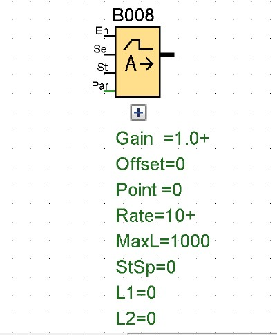

RAMPA ANALÓGICA
Descripción Breve
La instrucción "Rampa analógica" permite desplazar la salida a una velocidad específica desde el nivel actual hasta el nivel seleccionado.
| Conexión | Descripción |
|---|---|
| Entrada En | Un cambio de estado de 0 a 1 en la entrada En (Enable) activa el nivel de arranque/parada (offset "B" + StSp) en la salida durante 100 ms e inicia la operación de rampa hasta el nivel deseado. Un cambio de estado de 1 a 0 pone inmediatamente el nivel actual al offset "B" y, por tanto, la salida AQ a 0. |
| Entrada sel | SeI = 0: se selecciona el nivel 1 (Level 1). SeI = 1: se selecciona el nivel 2 (Level 2). Un cambio de estado de Sel ocasiona el desplazamiento desde el nivel actual hasta el nivel deseado a la velocidad indicada. |
| Entrada st | Un cambio de estado de 0 a 1 en la entrada St (parada desacelerada) hace que el nivel actual se reduzca a una velocidad constante hasta alcanzar el nivel de arranque/parada (offset "B" + StSp). El nivel de arranque/parada se mantiene durante 100 ms y el nivel actual se pone luego al offset "B". Por tanto, la salida AQ se pone a 0. |
| Parámetro | L1 y L2: niveles que deben alcanzarse. Rango de valores por nivel: de -10000 a 20000 MaxL: Valor máximo que no debe excederse. Rango de valores: de -10000 a 20000 StSp: offset de arranque/parada: valor que se suma al offset "B" para crear el nivel de arranque/parada. Si el offset de arranque/parada = 0, el nivel de arranque/parada es igual al offset "B". Rango de valores: de 0 a 20000 Velocidad: Velocidad a la que se alcanzan los niveles 1 o 2, o bien el offset. Se indican pasos por segundo. Rango de valores: 1 a 10000 Ganancia Rango de valores: 0 a 10,00 Offset Rango de valores: de -10000 a +10000 p: número de decimales Ajustes posibles: 0, 1, 2, 3 |
| Salida AQ | La salida AQ se escala con la fórmula siguiente: (nivel actual - offset "B") / ganancia "A" Nota: si AQ se visualiza en el modo de parametrización o de textos de aviso, se mostrará como valor no escalado (en unidades de ingeniería: nivel actual) Rango de valores para AQ: 0 a 32767 |
Parámetro G_T
Se puede configurar una base de tiempo para la salida analógica:
El tiempo de puerta G_T también puede ser el valor real de otra función preprogramada:
- Comparador analógico: Ax - Ay
- Conmutador analógico de valor umbral: Ax
- Amplificador analógico: Ax
- Multiplexor analógico: AQ
- Rampa analógica: AQ
- Instrucción aritmética: AQ
- Regulador PI: AQ
- Contador adelante/atrás: Cnt
- Retardo a la conexión: Ta
- Retardo a la desconexión: Ta
- Retardo a la conexión/desconexión: Ta
- Retardo a la conexión con memoria: Ta
- Relé de barrido (salida de impulso): Ta
- Relé de barrido activado por flancos: Ta
- Generador de impulsos asíncrono: Ta
- Interruptor de alumbrado para escalera: Ta
- Interruptor multifuncional: Ta
- Cronómetro: AQ
- Filtro analógico: AQ
- Valor medio: AQ
- Máx/Mín: AQ
- Selector de umbral: Fre
Seleccione la función deseada mediante el número de bloque.
Cronograma

Descripción de la función
El trigger mide las señales en la entrada Fre. Los impulsos se capturan durante un tiempo configurable G_T.
La salida Q se activa o desactiva en función de los valores umbral ajustados. Consulte la siguiente regla de cálculo.
Regla de cálculo
- Si el umbral de conexión ≥ umbral de desconexión, rige:
Q = 1 si fa > On
Q = 0 si fa ≤ Off. - Si el umbral de conexión < umbral de desconexión, rige: Q = 1 si On ≤ fa < Off.
EJERCICIOS
EJERCICIO 1
- Objetivo: Acelerar motor de 0% a 80% en 5 s suavemente.
- Cableado: En = habilitar arranque; Sel = 1 para L2 (80%); AQ -> salida analógica (con amplificador si necesario). St = parada desacelerada.
- Parámetros: L1 = 0, L2 = 8000 (según escala interna), Velocidad = (nivel/5s en pasos/seg según unidad), Offset B = 0, StSp = valor arranque.
- Resultado: rampa suave a 80% en 5 s.
EJERCICIO 2
- Objetivo: Cambiar referencia entre dos niveles con deceleración al parar.
- Cableado: Sel = entrada selector; St = input para parada desacelerada.
- Parámetros: L1=3000, L2=7000, Velocidad= apropiada (ej. 1000 pasos/s).
- Resultado: transición gradual entre niveles.



Rampa analógica
Solución del ejercicio 1
Solución del ejercicio 2